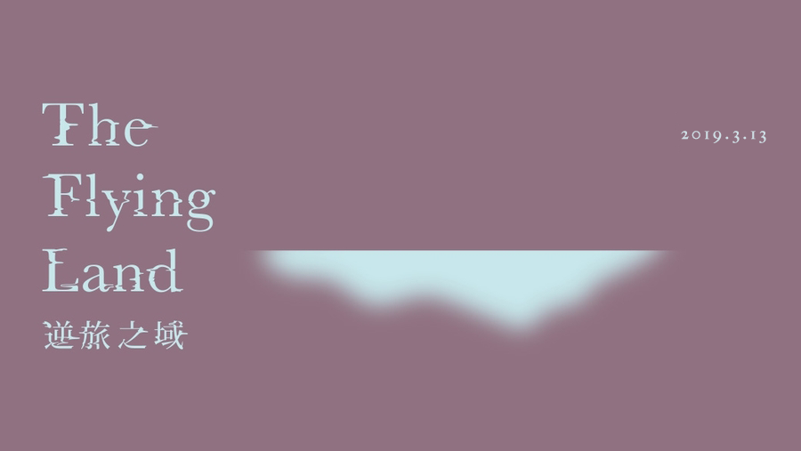
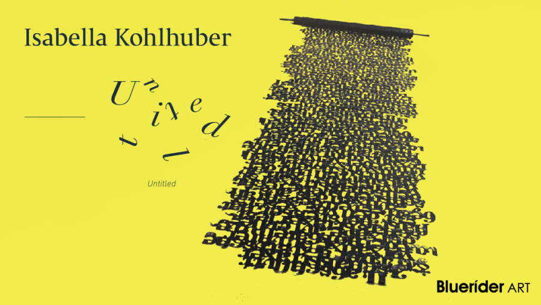
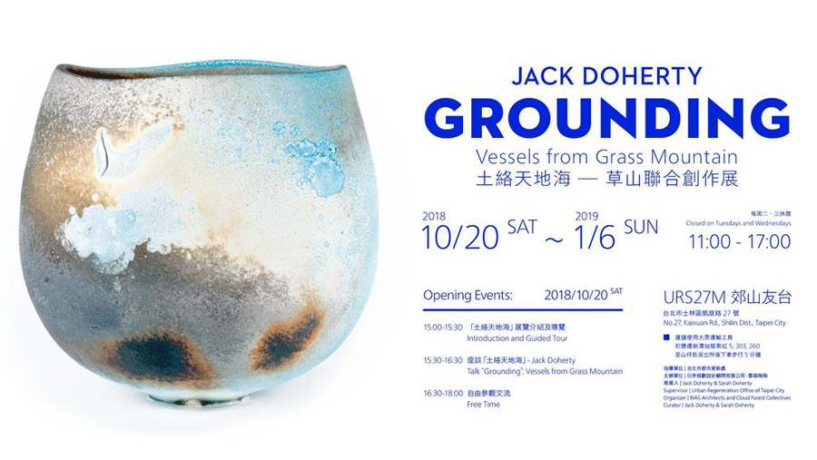
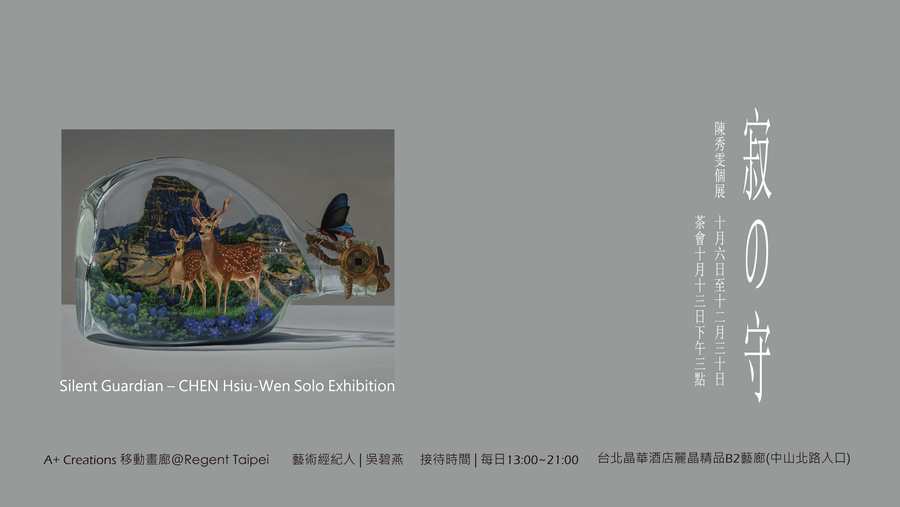
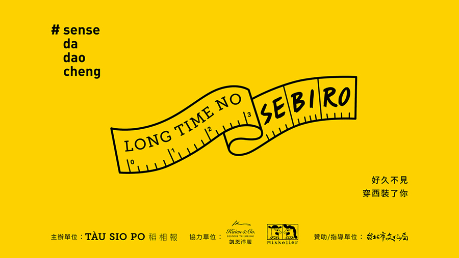

逆旅之域 The Flying Land
2018.12.17 忠泰美術館
公園處與忠泰美術館共同邀請民眾至瑠公圳公園親自欣賞作品《大砲花瓶》，體驗引人深思的藝術作品。
Add to Urban Diary

《Untitled》亞洲首個展
2018.12.18 臺北市大安區仁愛路四段25-1號9樓
Bluerider ART的亞洲首個展’Untitled’，分別呈現了Isabella Kohlhuber在不同媒材上展現獨特的敘事邏輯。
Add to Urban Diary

「土絡天地海」草山聯合創作展
2018.12.20 臺北市士林區凱旋路27號
URS27M郊山友台是唯一一處位於陽明山的都市再生基地，基地以推廣郊山生活美學的使命。
Add to Urban Diary

「寂之守」陳秀雯創作個展
2018.12.21 臺北市中山區中山北路二段39巷3號B2
「寂の守」沉默的守護者，陳秀雯創作以來一直以沉靜的畫面，但炙熱並略帶焦慮的情感在傳達她畫面中的議題。
Add to Urban Diary

Long Time No Sebiro 好久不見穿西裝了你
2018.12.23 臺北市大同區南京西路241號 米凱樂啤酒吧
臺北馬拉松吸引來自全球與國內路跑菁英齊聚一堂，儼然已為臺灣年度最具指標性與壓軸馬拉松賽事。
Add to Urban Diary